Disturbance Test
Use the release version 0406 Daily Build (replace BIN and SO) and turn off the online correction
|
case |
description |
run time (min) |
front wide camera |
front tele camera |
TJA |
|
0 |
1:36PM |
20 |
Number of convergence: 4 0.225 → 0.175 → 0.225 → 0.225 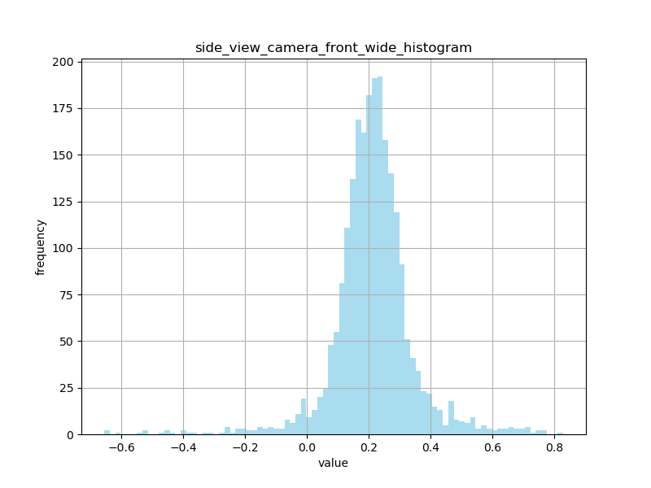 |
Number of convergence: 1 0.175 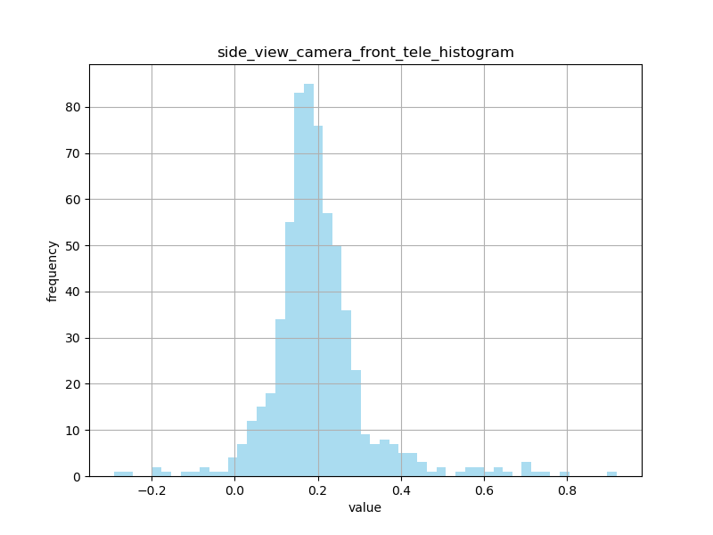 |
FRONT_WIDE_CAMERA Unproof ONLINE CALIB |
|
6 |
2:34PM front wide yaw + 0.5° front tele yaw + 0.5° |
30(60) |
Number of convergence: 0 (0) 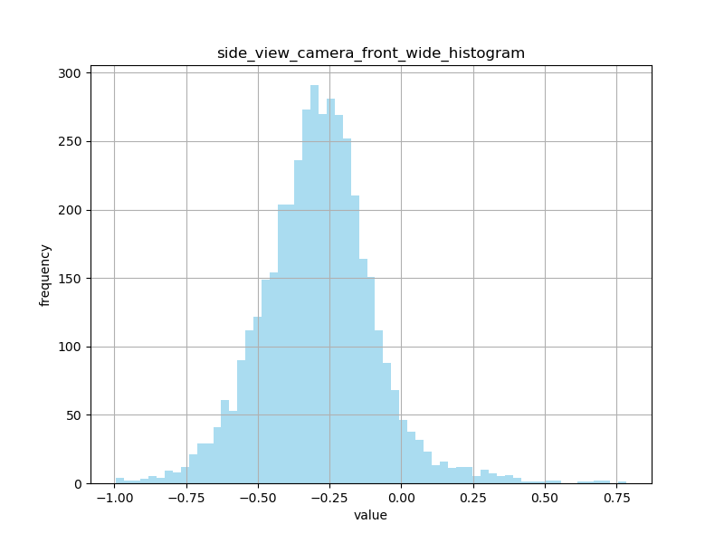 |
Number of convergence: 2 (4) -0.325 → -0.325 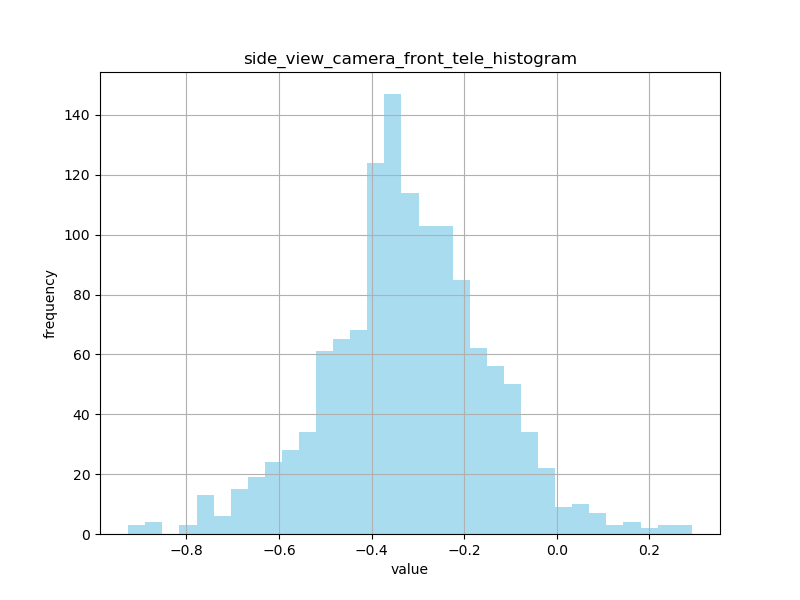 |
|
|
12 |
3:58PM front wide yaw + 3.0° front tele yaw + 3.0° |
30(44) |
Number of convergence: 1 (8) -2.875 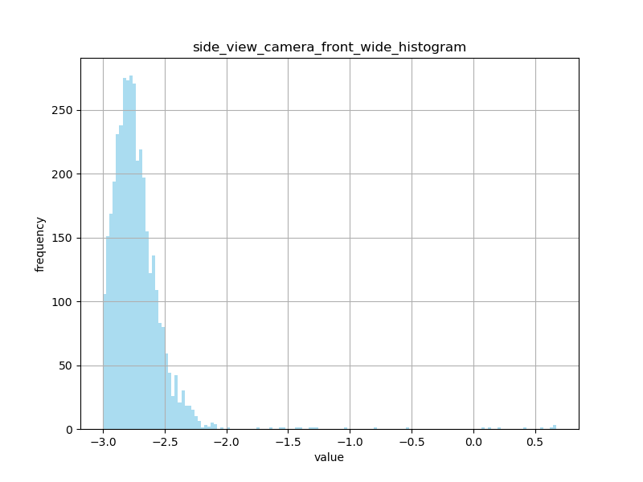 |
Number of convergence: 1 (2) -2.875 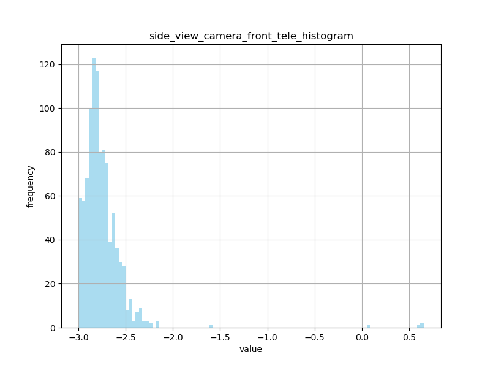 |
|
|
9 |
5:45 PM congestion front wide yaw + 1.0° front tele yaw + 1.0° |
45 |
Number of convergence: 8 -0.775 → -0.775 → -0.725 → -0.775 → -0.725 → -0.725 → -0.725 → -0.725 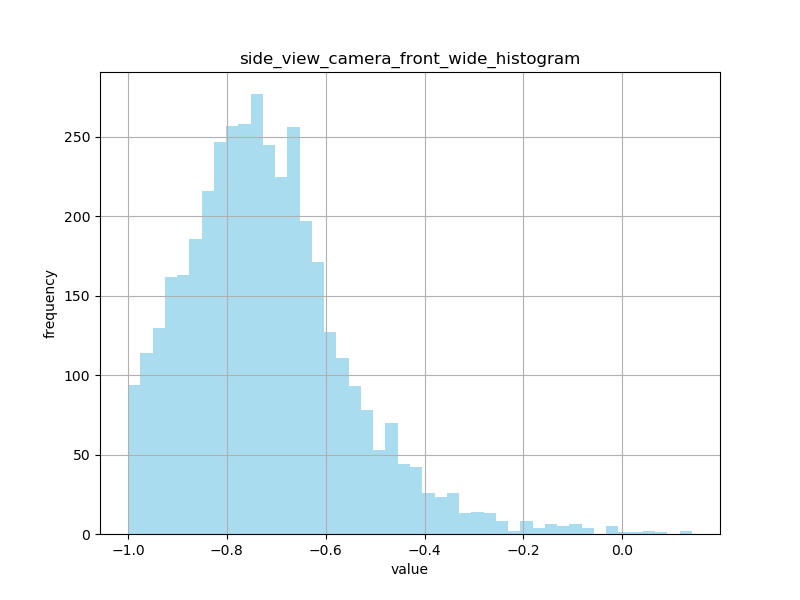 |
Number of convergence: 2 -0.801 → -0.787 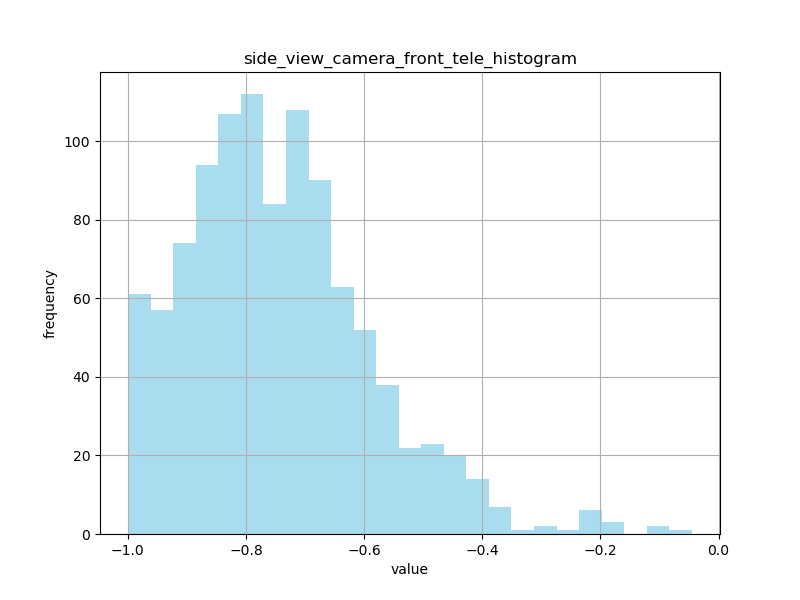 |
Center |
|
4 |
7:46 PM congestion front wide yaw + 0.5° |
20 |
Number of convergence: 7 -0.425 → -0.221 → -0.238 → -0.225 → -0.275→ -0.275 → 0.275 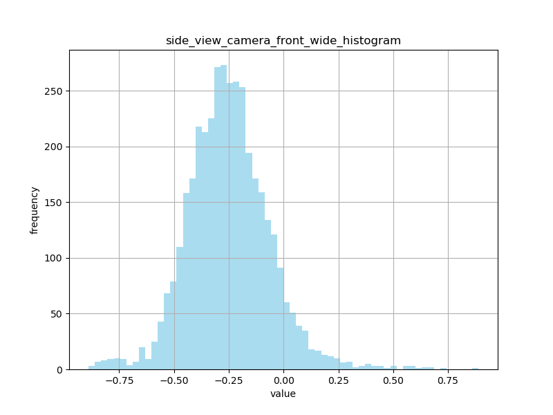 |
Number of convergence: 3 0.227 → 0.225 → 0.225 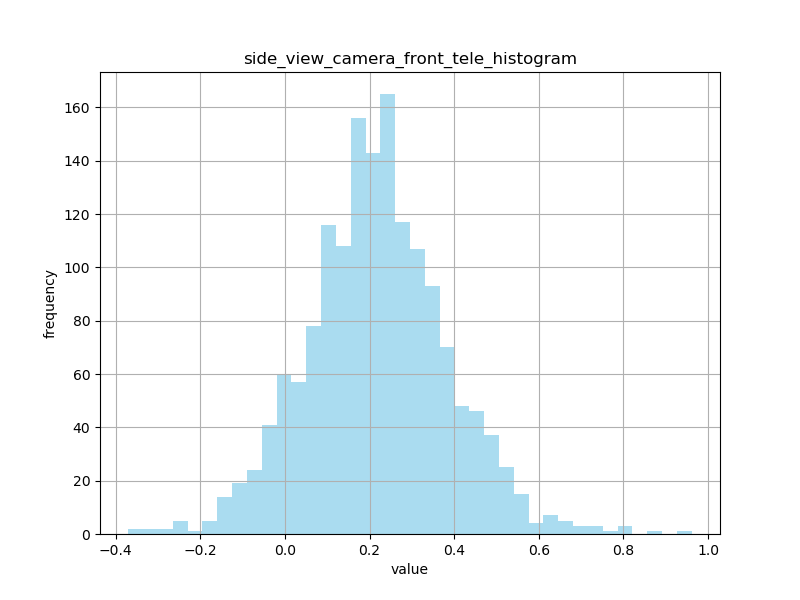 |
Center |
|
7 |
9:23 PM Night front wide yaw + 1.0° |
45 |
Number of convergence: 1 1 -0.76 → -0.775 → -0.725 → -0.775 → -0.744 → -0.742 → -0.775 → -0.775 → -0.746 → -0.725 → -0.725 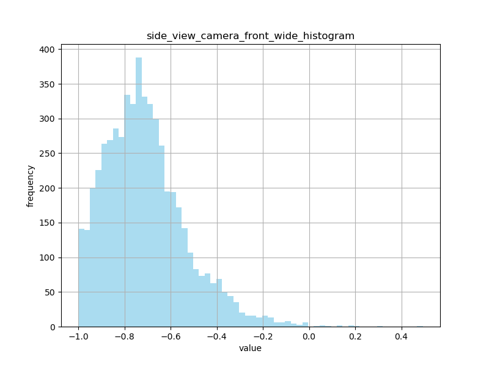 |
Number of convergence: 3 0.222 → 0.125 → 0.219 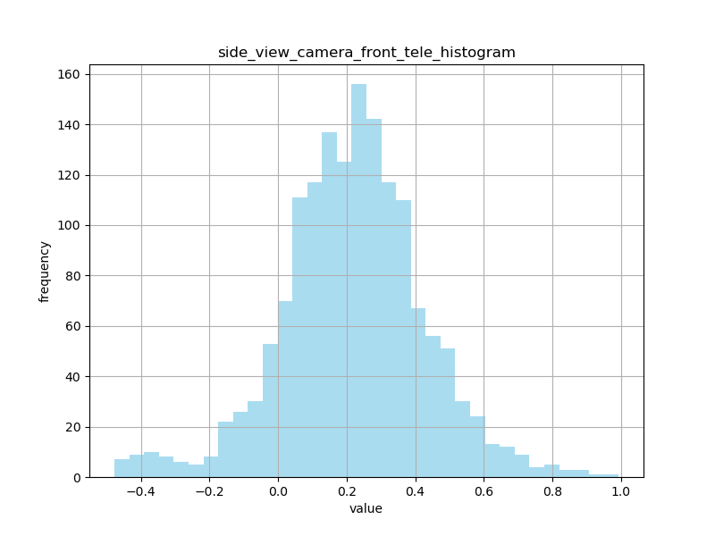 |
Obviously left But online calibration results are normal |
|
1 |
11:24 PM Night front wide yaw + 0.3° |
48 |
Number of convergence: 1 1 -0.039 → -0.048 → -0.05 → -0.053 → -0.059 → -0.025 → -0.025 → -0.025 → -0.025 → -0.025 → -0.025 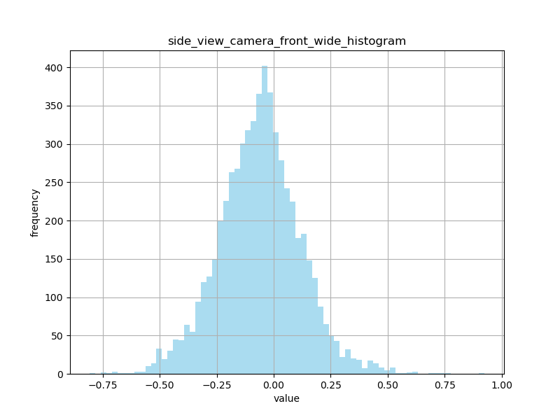 |
Number of convergence: 3 0.175 → 0.232 → 0.175 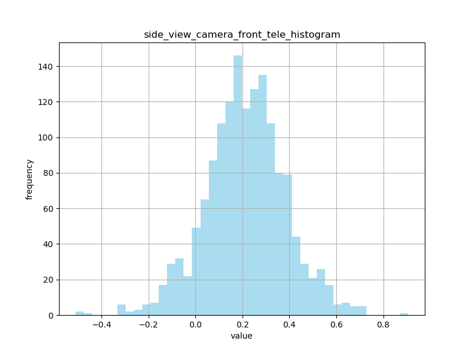 |
Mild to left But online calibration results are normal |